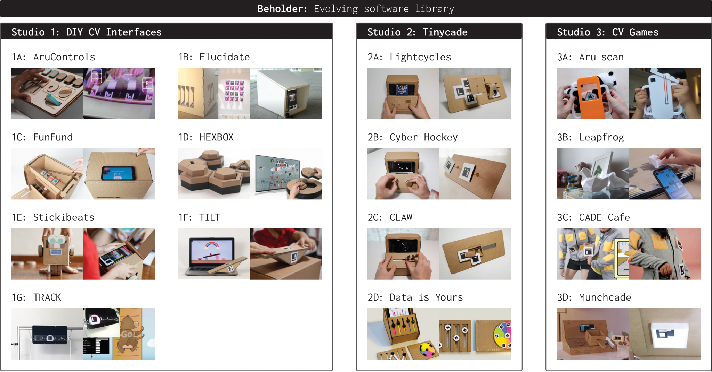

Marking Material Interactions Portfolio
Following our work with Printed Paper Markers we conducted a series of workshops with industrial designers to investigate how other makers learn of and leverage our Computer Vision technique. Through reflecting on these projects we surfaced themes that other designers explored and the mechanisms for detecting interactions that they developed. You can view all of these projects by following the portfolio link below.
Portfolio Website CHI PublicationCollaborators: Clement Zheng, Sandra Bae, Ruhan Yang
